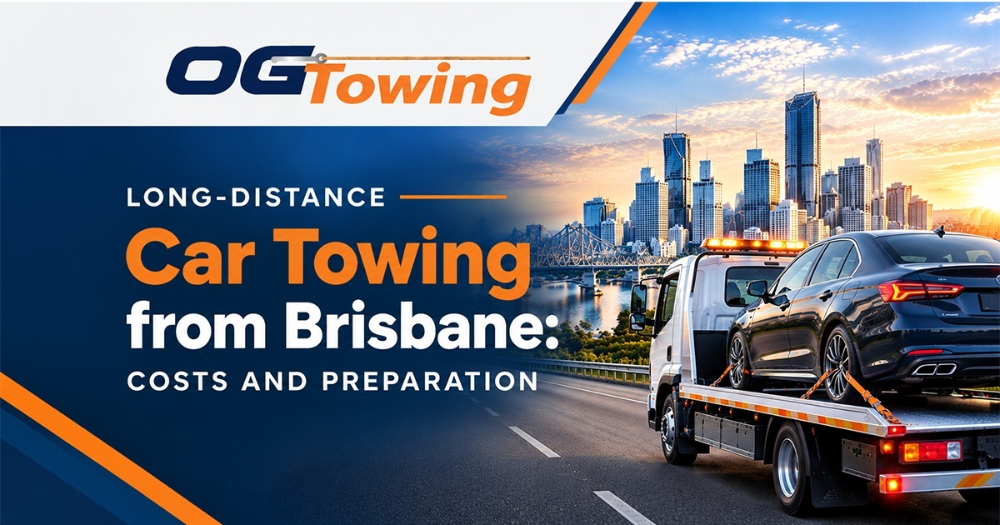

When you need to transport a vehicle over a long distance, choosing a reliable towing company can make the process easier and safer. Whether you are moving to another city, buying a car from interstate, dealing with a vehicle breakdown, or arranging accident recovery, understanding long-distance car towing costs and preparation is essential.
OG Towing provides towing services in Brisbane, Capalaba, Redlands and surrounding areas. Planning your vehicle transport in advance can help you understand the costs, prepare your car properly and arrange a suitable towing service.
What Is Long-Distance Car Towing?
Long-distance car towing involves transporting a vehicle from one location to another over an extended distance. Unlike a short local tow, longer journeys may require additional planning, suitable towing equipment and consideration of road conditions.
You may need long-distance car towing from Brisbane when:
- Moving your vehicle to another Queensland city or interstate.
- Transporting a car that is not roadworthy.
- Recovering a broken-down vehicle from a regional area.
- Moving a newly purchased or second-hand vehicle.
- Arranging vehicle transport after an accident.
If you need local assistance first, explore our car towing services in Brisbane to learn more about available towing options.
How Much Does Long-Distance Car Towing from Brisbane Cost?
The cost of long-distance car towing depends on several factors. Every transport job is different, so requesting a quote based on your pickup and destination details is the best way to understand the expected price.
1. Distance and Destination
The total distance between the pickup and delivery locations is one of the main factors affecting towing costs. Transporting a vehicle to a nearby regional town will generally involve different costs from transporting it interstate.
2. Vehicle Type and Condition
The size, weight and condition of your vehicle can affect the equipment and loading arrangements required. A standard passenger car may be easier to transport than a large four-wheel drive, a lowered vehicle or a car with accident damage.
3. Accessibility and Pickup Location
A vehicle parked in a narrow driveway, underground car park or difficult roadside location may require additional preparation or specialised recovery equipment.
4. Urgency and Service Requirements
Emergency towing, after-hours assistance and urgent transport arrangements may affect the final quote. Confirm the service requirements with your towing provider before booking.
5. Additional Transport Requirements
Longer journeys may involve tolls, special loading requirements or other job-specific costs. Ask whether these are included in your quote and request a clear explanation of any additional charges.
Tip: Before confirming a booking, provide the correct pickup and destination addresses, vehicle details and preferred transport date. This helps the towing company give you a more accurate estimate.
How to Prepare Your Car for Long-Distance Towing
Preparing your vehicle before collection can make the transport process smoother.
Remove Personal Belongings
Take out valuables, loose items and personal belongings before the vehicle is collected. Ask your towing provider about any restrictions on items left inside the car.
Check the Vehicle Condition
Tell the towing operator if your car has damaged wheels, steering problems, leaking fluids, a flat battery or accident damage. This information helps determine the appropriate loading method.
Secure Loose Parts
Remove or secure loose accessories and items that could become damaged during transport. If your vehicle has a modified suspension or a low ground clearance, mention this when requesting a quote.
Take Photos Before Collection
Photograph your vehicle from several angles before transport. Record any existing scratches, dents or other damage for your own records.
Provide Accurate Pickup Details
Confirm the vehicle's exact location, access instructions, contact details and destination address. If the car is at a workshop, roadside location or accident scene, make sure collection arrangements are authorised.
Choosing a Reliable Long-Distance Towing Company
Choosing a suitable towing company is important when your vehicle needs to travel a significant distance. Before booking, check that the provider has appropriate equipment, suitable insurance arrangements and experience handling your type of vehicle.
Ask about the estimated arrival and delivery arrangements, loading procedures, payment terms and what happens if the vehicle cannot be loaded normally.
If your vehicle has been involved in an accident, you can also explore our accident and insurance towing services for relevant assistance.
For additional preparation and roadside safety guidance, consult the official Queensland Government website.
Why Choose OG Towing for Vehicle Transport from Brisbane?
When arranging vehicle transport, clear communication and careful handling matter. OG Towing serves Brisbane, Capalaba, Redland Bay, Logan and nearby areas, helping customers arrange towing for a range of vehicle-related situations.
Whether you need assistance after a breakdown, accident recovery or transport to another location, contact OG Towing to discuss your requirements and confirm the available service options.
Visit the official OG Towing website to learn more about our services and request a quote.
Book Long-Distance Car Towing from Brisbane
Planning ahead can help you avoid unnecessary delays and understand your vehicle transport costs. Provide accurate vehicle and destination details, prepare your car for collection and confirm the quote before proceeding.
Need towing assistance from Brisbane? Visit OG Towing to discuss your vehicle transport requirements and arrange a suitable service.
FAQs
The price depends on distance, vehicle condition, vehicle size, accessibility
and urgency. Contact OG Towing with your pickup and destination details for a
quote.
Yes, a non-running vehicle may be transported using suitable towing or recovery
equipment. Tell the operator about mechanical problems, damaged wheels or
steering issues before booking.
Interstate transport may be possible depending on the destination, vehicle and
service availability. Confirm the route, timing and transport arrangements with
your provider.
Prepare your pickup and destination addresses, vehicle make and model, vehicle
condition, preferred collection time and contact details.
Yes. Removing valuables and loose belongings is recommended. Ask your provider
about its policy on items left inside the vehicle.